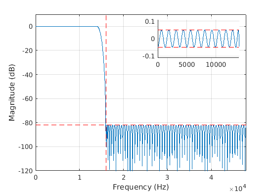
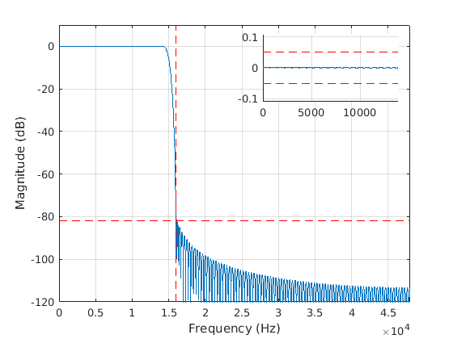
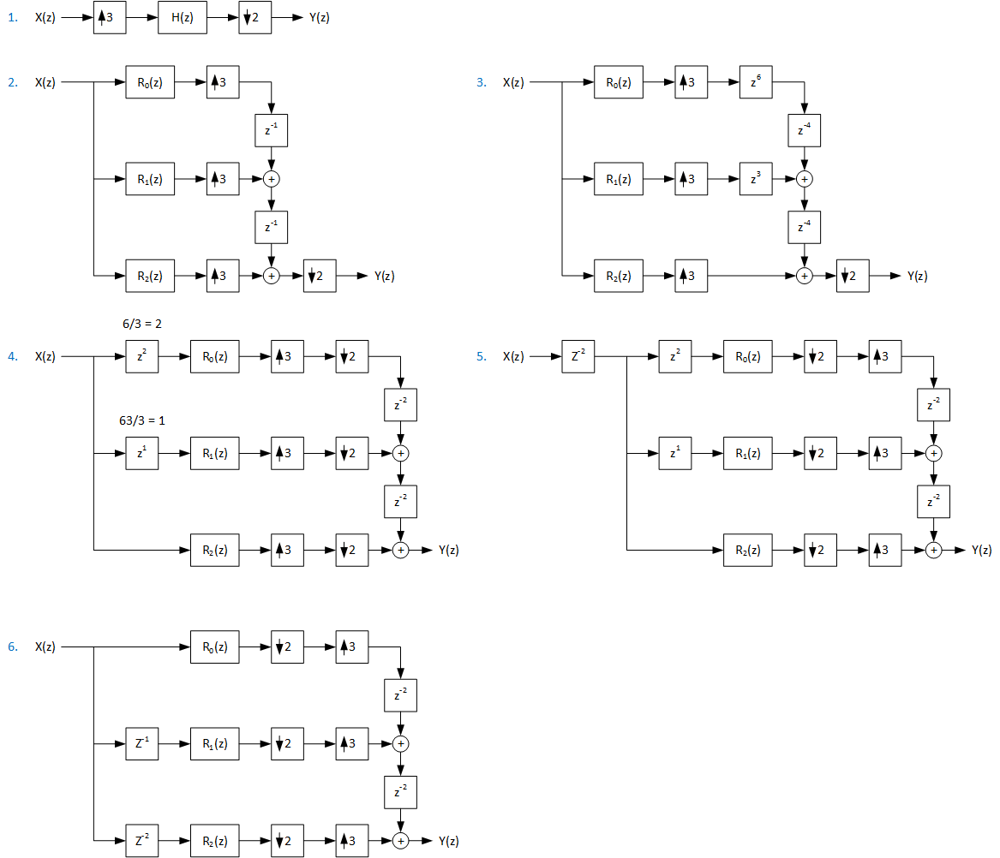

Sample Rate Conversion#
See also
For a high-level firmware architectural overview of both Synchronous (SRC) and Asynchronous (ASRC) converters—including multi-stage factorization, continuous Farrow drift compensation, push vs pull topologies, and SIMD acceleration—see Sample Rate Conversion Architecture (SRC & ASRC).
Introduction#
The sample rate converter (SRC) component utilizes FIR polyphase decomposition that is described in [1]. In a linear system, the order of operations can be altered while preserving the transfer function from system input to output. The purpose of polyphase optimization is to move the processing operations to the lowest sample rate possible and omit computing of intermediate results that would be discarded. The benefit of polyphase conversion is its capability to scale to very high quality like true 24-bit studio quality, since the filtering is a linear operation and the performance depends on the time-invariant filter characteristics. The algorithm does not limit the audio conversion quality.
The SRC component is a synchronous type that converts the rates with exact rational M/N fraction and cannot adjust for any small drift of the sample rate. Per every call to SRC, the algorithm consumes exactly N input samples and M output samples.
As an example, if input to SRC is 11025 Hz and output is 48000 Hz, the fraction for conversion is 640/147. For every 147 input samples, there are 640 output samples at 48 kHz. Such a processing block would require 13.3 ms of buffering. To shorten the latency and ease the conversion fractions, some of the conversions are executed in two stages. The fraction 640/174 can be factored as 32/21*20/7. With the two fractions approach, the SRC will input with 21 frames of granularity and output with 20 frames of granularity. The internal buffer between the stages places an internal constraint for processing block sizes. Still, the approach provides much shorter latency than using a single fraction.
In some cases, it might be possible to design and use a converter that is intentionally non-exact, such as a 48000/11000 conversion that has an easier faction of 48/11 and provides much lower SRC latency. But use of such approximation with as low as 0.2% error would result in a systematic slow drift of audio presentation so it is not recommended. Fortunately, conversions in the 48 kHz family rates such as 32 kHz to 48 kHz is a much lower latency with the 3/2 fraction with the need for only 63 us of additional buffer.
Note that another asynchronous SRC (ASRC) type is needed when the ratio drifts during time, or if a M/N fraction does not exist within the required conversion precision, or if the fraction requires filters that are too complex to handle with a very large M or N.
Use of SRC generator tool#
Prerequisites#
The GNU Octave tool or Matlab® is needed to run the support scripts. From the Ubuntu desktop, Octave and the required signal package can be installed from the stock apt repository with the following command:
sudo apt-get install octave octave-signal
Octave users need to create a file in the home directory called .octaverc. The file should contain the following lines to load the signal package and disable the pager (press the space key while the scripts print intermediate information about progress):
more off
pkg load signal
Basic usage#
First, an Octave shell is launched from the tool directory:
cd tools/tune/src
octave --gui
The SRC component is set up in the src_generate.m script. A help for script usage can be printed by using the Octave shell command:
>> help src_generate
The command to generate SRC coefficients for input rates of 32 and 48 kHz and output rates of 44.1 and 48 kHz would be:
>> src_generate([32e3 48e3],[44.1e3 48e3])
If the script is called without arguments, it computes a larger set of default conversions. The text output at the end of the script reports the fractions M/N used for conversions, and estimated millions of operations per second (MOPS) for filter arithmetic. Some more complex fractions are handled with the M1/N1 x M2/N2 two-stage conversion to ease internal filters computation. In the end, estimate of coefficient storage RAM and component data RAM are shown.
Dual stage fractional SRC: Ratios
in \ out, 44.1, 48.0,
32.0, 21/20*21/16, 3/2,
48.0, 21/20*7/8, 1,
Dual stage fractional SRC: MOPS
in \ out, 44.1, 48.0,
32.0, 5.47, 4.42,
48.0, 6.68, 0.00,
Dual stage fractional SRC: MOPS per stage
in \ out, 44.1, 48.0,
32.0, 2.82+2.65, 4.42+0.00,
48.0, 2.62+4.06, 0.00+0.00,
Coefficient RAM 19.7 kB
Max. data RAM 4.8 kB
This same output is stored in reports/src_2stage.txt to keep a record of generated conversions.
To apply the generated coefficients to SOF firmware, the execution of
this script outputs C header files to the include directory. They
can be then copied as such to the SOF source directory
src/include/sof/audio/coefficients/src/. In these header files,
src_<ctype>_define.h contains #define statements for some SRC filter
maximum characteristics. The header file src_<ctype>_table.h includes
all needed individual filter header files and constructs a table of
SRC stages to use when a mode with certain input and output rate is
initialized. The missing conversions refer to a minimal passthrough
filter setup. An example of generated include file “src_std_int32_table.h”
is shown below:
/* SRC conversions */
#include <sof/audio/coefficients/src/src_std_int32_3_2_4535_5000.h>
#include <sof/audio/coefficients/src/src_std_int32_7_8_4535_5000.h>
#include <sof/audio/coefficients/src/src_std_int32_21_16_4319_5000.h>
#include <sof/audio/coefficients/src/src_std_int32_21_20_4167_5000.h>
#include <sof/audio/coefficients/src/src_std_int32_21_20_4535_5000.h>
/* SRC table */
int32_t fir_one = 1073741824;
struct src_stage src_int32_1_1_0_0 = { 0, 0, 1, 1, 1, 1, 1, 0, -1, &fir_one };
struct src_stage src_int32_0_0_0_0 = { 0, 0, 0, 0, 0, 0, 0, 0, 0, &fir_one };
int src_in_fs[2] = { 32000, 48000};
int src_out_fs[2] = { 44100, 48000};
struct src_stage *src_table1[2][2] = {
{ &src_int32_21_20_4535_5000, &src_int32_21_20_4167_5000
},
{ &src_int32_3_2_4535_5000, &src_int32_1_1_0_0
}
};
struct src_stage *src_table2[2][2] = {
{ &src_int32_21_16_4319_5000, &src_int32_7_8_4535_5000
},
{ &src_int32_1_1_0_0, &src_int32_1_1_0_0
}
};
The header file first includes the coefficient vectors. The last four values in the file names are fraction, passband end relative to sample rate x1000, and stop band start relative to sample rate x1000. Many of the conversions are reused for other rates combinations with the same fractions.
The vectors src_in_fs and src_out_fs list supported input and output rates. The arrays of structs src_table1 and src_table2 refer to the FIR filters coefficients used for the rates matrix. A special single tap FIR with a coefficient of 1.0 (Q2.30) is used when filtering is not needed such as when the input and output rates are equal or if a SRC stage is not used.
Coefficient precision#
The coefficients can be generated as int16, int24, int32, or float type. The type is the 3rd argument for the src_2stage (in_rates, out_rates, ctype) function call. It defaults to ‘int16’, which is the least memory-consuming type that provides the minimum quality. The 16-bit coefficients may achieve near up to a 80-90 dB stopband that will give a “near CD quality” conversion. The int32 and float type are capable of providing “CD quality” and better with a higher filter spec that is explained later.
The capabilities and qualities of the SRC component to use depends on whether you are building a “tiny” int16 or “std” int32 coefficient set. The testbench and FW build with the xtensa compiler defaults to 32 bit coefficients. The gcc build for firmware uses 16 bit coefficients. The scripts used to generate them are src_tiny_int16.m and src_std_int32.m. These scripts are the easist to use as a starting point for creating a custom SRC configuration.
Exclusion of non-needed conversions#
If in the previous example there would be no need to convert from 32 to 44.1 kHz, add a matrix with zero in the place of the non-wanted conversion. This will help save memory that is needed to store the conversion coefficients.
>> src_generate([32e3 44.1e3 48e3],[44.1e3 48e3],[0 1; 1 1; 1 1])
In the script output, the removed conversion is marked with an ‘x’ and corresponding filters are not calculated.
Adjustment of SRC filter specification#
The default conversions are tuned with the stopband specification to provide min -80 dBFs THD+N performance. The requested stop-band attenuation has been chosen such that the THD+N criteria is met in the worst-case modes.
The bandwidth is about 20 kHz for 44.1 kHz and 48 kHz sample rates. The bandwidth is scaled to correspond to the minimum sample rate of the conversion. However, for rates higher than 88.1 kHz, the bandwidth is kept as about 30 kHz to provide a measurable band extension but not stretch it near Nyquist Fs/2 as for lower sample rates.
The transition band starts at the filter pass-band bandwidth and ends at the stop-band start. It is, as an example, from 20 kHz to Nyquist rate Fs/2. The transition band is a don’t care region for filter-design but, with the used filter design method, it connects the end of the pass-band to the start of the stop-band with a near constant dB/log frequency line them.
These are defined in the Octave function src_param.m in the fields of returned struct cnv. The ratio of pass-band bandwidth to min. sample rate is defined in c_pb. The ratio of stop-band frequency to min. sample rate is defined in c_sb. Stopband attenuation is rs. Passband ripple is rp. The ripple is doubled for conversions that use both stages, so this should be the desired value divided by two.
The end of the script defines exceptions for a high sample rate to reduce complexity. Note that the use of exceptions for pass-band width may create unnecessary duplicates of conversions. If the c_pb and c_sb are unmodified then the conversions like 1/2x or 2x get maximal reuse.
Note that parameters other than c_pb and c_sb can’t be used in exceptions without hazard (e.g. stopband). The other parameters need to be kept the same for all conversions. As seen from the coefficient include file names, the individual filters are differentiated only by their conversion fraction and these bandwidths:
%% Default SRC quality
cnv.c_pb = q * 20/44.1; % Gives 20 kHz BW @ 44.1 kHz
cnv.c_sb = 0.5; % Start stopband at Fs/2
cnv.rs = 70; % Stopband attenuation in dB
cnv.rp = 0.1; % Passband ripple in dB
cnv.rp_tot = 0.1; % Max +/- passband ripple allowed, used in test script only
cnv.gain = -1; % Gain in decibels at 0 Hz
The next plots show the difference between the firpm and the kaiser SRC filter characteristic. In equiripple, the passband and stopband are just at the allowed limit across the pass and stopband. Equiripple design is selected with the option cnv.design set to ‘firpm’. However, in Octave it fails in many conversions due to an apparent bug in the remez() function. In Matlab, the function firpm() is used and it can be used for up to about 2000 order filters.
The cnv.design set to ‘kaiser’ is a robust choice for all conversions but results to somewhat longer filters due to stopband and passband shape. The stopband attenuation increases towards higher frequencies so the specified “rs” can be lower for this filter type for firmpm. Utilizing full allowed passband ripple may be possible but it could not be achieved in this version. As seen below, the ripple is much less than specified maximum:

Figure 300 Equiripple SRC filter characteristic#

Figure 301 Kaiser SRC filter characteristic#
Test the SRC component#
Build the testbench executable#
The FW component for SRC can be compiled to a desktop Linux executable with test bench C sources in the tools/testbench directory. It is built from the top level SOF tree with the command:
scripts/host-build-all.sh
The executable can be run with commands to see the command line parameters help:
cd tools/testbench/build_testbench
./testbench -h
The executable can be debugged with any C debugger/IDE tool and any code analysis tool such as valgrind and gprof. Some tips for debugging are:
In interactive debugging, it can be useful to remove the default -O2 optimization in order to get linear stepping of code lines and accurate breakpoints.
When debugging audio processing in gdb-based debuggers, it can be useful to plot with gnuplot vectors of numerical values as graphs. Instructions for setting it up is available in https://sourceware.org/gdb/wiki/PlottingFromGDB.
Tests for quality#
A set of tests has been implemented that follows the AES17 recommended test metric [2]. However, the scripts provide only an indication of expected AES17 performance since they have not been calibrated or verified.
It is useful to run the exported coefficient set to see the impact of tuned quality or to see the performance of newly added conversion modes. Available modes are gain, frequency response, dynamic range, attenuation of alias products, and attenuation of image products.
Additionally, for a quick visual indication of the conversion characteristic, a spectrogram of a chirp is plotted. A pass/fail count is reported for a simple criteria for the used performance indicators. The test is executed from an Octave shell with this command:
cd tools/test/audio/
./src_test.sh
A subset of the test can be started from the Octave command line:
octave
>> src_test(32, 32, 32000, 48000);
The test script can be more friendly for detailed study of a conversion with a small edit in src_test.m:
diff --git a/tools/test/audio/src_test.m b/tools/test/audio/src_test.m
index 5d9b95e44da4..c89b2e4c555c 100644
--- a/tools/test/audio/src_test.m
+++ b/tools/test/audio/src_test.m
@@ -66,9 +66,9 @@ t.full_test = 1; % 0 is quick check only, 1 is full set
% visibility set to to 0 only console text is seen. The plots are
% exported into plots directory in png format and can be viewed from
% there.
-t.plot_close_windows = 1; % Workaround for visible windows if Octave hangs
-t.plot_visible = 'off'; % Use off for batch tests and on for interactive
-t.files_delete = 1; % Set to 0 to inspect the audio data files
+t.plot_close_windows = 0; % Workaround for visible windows if Octave hangs
+t.plot_visible = 'on'; % Use off for batch tests and on for interactive
+t.files_delete = 0; % Set to 0 to inspect the audio data files
%% Init for test loop
n_test = 7; % We have next seven test cases for SRC
Tips for debugging#
Additional debugging information can be obtained from the output of src_test.m scripts. It includes command line arguments that src_test.m uses for the shell script src_run.sh as well as for the testbench executable.
Running the script “src_test(32, 32, 32000, 48000);” returns the following output:
Running './src_run.sh 32 32 32000 48000 chirp_test_in.raw chirp_test_out.raw'...
Command: ../../testbench/build_testbench/install/bin/testbench
Arg: -d -r 32000 -R 48000 -i chirp_test_in.raw -o chirp_test_out.raw -t ../../test/topology/test-playback-ssp2-mclk-0-I2S-src-s32le-s32le-48k-24576k-nocodec.tplg -a src=libsof_src.so -b S32_LE
Ld lib path: ../../testbench/build_testbench/sof_ep/install/lib:../../testbench/build_testbench/sof_parser/install/lib
When debugging the testbench, the library path needs to be appended to the environment variable LD_LIBRARY_PATH, and the shown arguments need to be set for the debugger such as text mode gdb or graphical ddd. If the option to not delete audio data files the test input files can be used for debugging as well.
Currently, the testbench can be debugged only as a host (x86) gcc build. However, the possibility of debugging with the xt-gdb will be restored to also debug an xtensa-optimized version of the component in the testbench.
Polyphase decomposition#
The SRC component is utilizing an algorithm-level optimization called polyphase decomposition. The next figure shows derivation of the polyphase fractional resampler for a 3/4 ratio that is used in, for example, a 32 to 24 kHz conversion.
Figure 302 Polyphase decomposition for fractional 32 to 24 kHz conversion (3/4)#
The basic conversion is shown.
The interpolation is changed to polyphase filter where low-pass filter H(z) is split into three sub-filters R0(z), R1(z), and R2(z).
The “3 to 1 commutator” structure that the zp:sup:p unit delays are multiplicated to match the decimation rate of 4. The subfilter outputs need to be compensated with an additional negative delay (zp, p > 0) to preserve the sub-filter out to the whole filter chain output Y(z).
The added negative delays are moved to filter the input side by dividing the negative delay by the interpolation factor. Also, the decimation at filter output is moved to the commutator input side.
The order of decimation and interpolation are swapped to have decimation first. Also, a delay is added to the input to compensate for a negative delay used to make the filter causal.
The input side delays are merged.
Note that the sub-filters R(z) in practical implementation share the same delay line. The delay length is defined as the length of the longest delay chain needed.
Also, in a practical implementation, this delay length includes the length of processing block length and store multiple channels of audio.
In this example the output commutator, after reformatting, remained unit delays-based. In case of non-unit delays, a more complex interleaving output buffer structure is needed.
In the next example of polyphase decomposition, the input is up-sampled by a ratio of 3/2 e.g. 32 kHz to 48 kHz conversion. The structure is the same for down-sampling conversion:

Figure 303 Polyphase decomposition for fractional 32 to 48 kHz conversion (3/2)#
Steps 1-2 are similar to the previous case.
The only difference is decimation by 2.
The multiplication of unit delays in output commutator is done with higher than decimation factor of 3 since the negative delay elements added need to be divide with the interpolation factor. Hence the unit delays are made z-4. This is needed because the order of interpolation and decimation could otherwise not be reversed.
Similar to the previous example.
Similar to the previous example.
In the remaining structure, the output commutator delays are doubled z-2. Therefore, the output needs a circular interleaving buffer. There is no need to sum/mix samples; write them with a stride and read linearly with a sufficient delay that ensures all delay slots have been written.